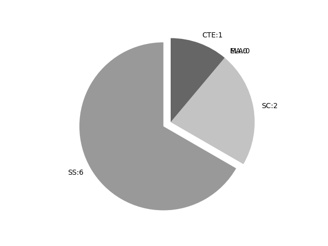

Utah
Report date: 2021-07-08
The frequency of all keywords found in this state's standards: 9
Comparable state score: 0.247 (median: .303, SD: .324)
The frequency above is the sum of all keywords found in all of this state's four core academic standards and the state's CTE/career standards. This total count is broken down by keyword and discipline area below.
On this site, 'comparable scores' are calculated as: keywords found divided by total words in the standards document(s) - multiplied by 100,000. The comparable scores attempt to normalize data, accounting for very different sizes of curriculum guidance documentation.
Frequencies by keyword or phrase:- spatial: 4
- geospatial: 3
- GIS: 2

Frequencies by discipline area: - SS: 6
(Comp: 0.894) - SC: 2
(Comp: 0.193) - MA: 0
(Comp: 0.0) - ELA: 0
(Comp: 0.0) - CTE: 1
(Comp: 0.084)
External support files:
Examples of keyword use by discipline area (and document): - CTE
- NaturalResourceScienceI.pdf, page:3, position:461
planning. a. Describe the interrelationships between land-use planning and natural resources. b. Identify land uses, capability factors, and land capability classes. c. Demonstrate how GISGPS applies to land-use planning. d. Use a soil
- SC
- ES.pdf, page:13, position:2228
polarity preserved in seafloor rocks, or regional hot spots. (ESS2.B) Standard ESS.2.4 Develop and use a model to illustrate how Earth™s internal and surface processes operate at different spatial and temporal scales. Emphasize how the appearanc - 7.pdf, page:13, position:998
which act together to form minerals and rocks. (ESS1.C, ESS2.A) Standard 7.2.2 Construct an explanation based on evidence for how processes have changed Earth™s surface at varying time and spatial scales. Examples of processes that occur at vary
- SS
- WorldGeography.pdf, page:0, position:2325
Foundational Geographic SkillsThe study of world geography begins with asking geographic questions. Students of geography use information gleaned from geographic texts such as maps, statistics, geospatial technology, media, and other geographic informati - WorldGeography.pdf, page:0, position:1602
the world through geography will nurture their sense of citizenry, as well as civic and global awareness. To that end, throughout this course, students should have ample opportunities to: Apply spatial analysis and reasoning to identify, examine, and - WorldGeography.pdf, page:1, position:862
of maps, including mental maps. Use and create maps, graphs, and other types of data sets to show patterns and pro-cesses in˚uencing our world. Use existing and emerging technologies, such as GIS and other geospatial technolo-gies, whenever pos - WorldGeography.pdf, page:1, position:877
mental maps. Use and create maps, graphs, and other types of data sets to show patterns and pro-cesses in˚uencing our world. Use existing and emerging technologies, such as GIS and other geospatial technolo-gies, whenever possible and appropriate - WorldGeography.pdf, page:1, position:1099
whenever possible and appropriate. Compare the implications of interactions and interconnections between various peo-ple and places at various scales. Use evidence to analyze and explain the spatial organization of people, places, and environments - WorldGeography.pdf, page:2, position:307
How does the environment in˚uence which agricultural methods are used in various places? What are the intended and unintended e˛ects of altering our physical landscape? How do geographers use geospatial data to help make informed decisions? WG Standa
{kind=link}